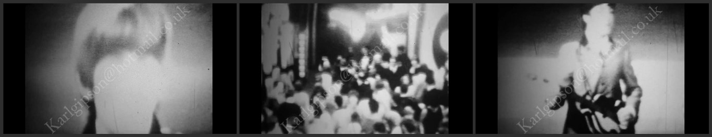
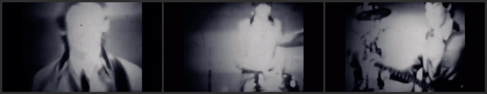
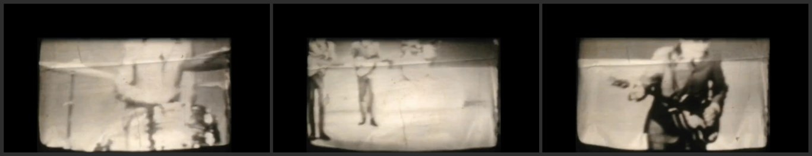

Top Of The Pops
March 19, 1964
1st Print
Songs Captured:
Can't Buy Me Love
You Can't Do That (Snippet)
History by Print Owner:
In 2015, I found this footage on silent 8mm at a car boot sale.
I was able to capture it using a DIY telecine method and looks good
for 405 line footage captured from a 8mm camera.
About the watermark, I own the original 8mm film.
2nd Print
Songs Captured:
Can't Buy Me Love
Look like the same film as Print 1, but without the giant watermark.
3rd Print
Songs Captured:
Can't Buy Me Love (Snippet)
You Can't Do That (Snippet)
No history about that print, look like another scan of the same film (Print 1), but cropped at the top. The quality is alot better.